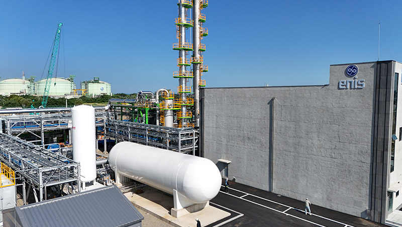
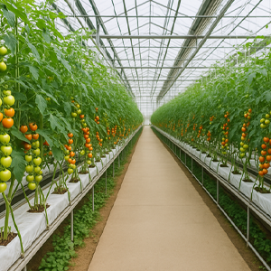
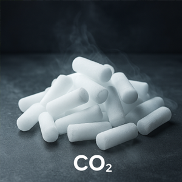
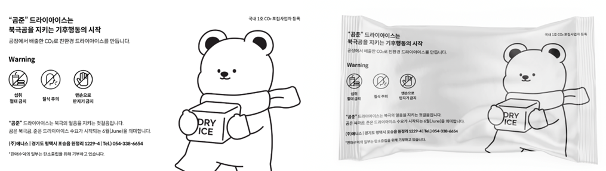

플롯플랜 도면 좌표 3D 시연 · 드래그 회전 · 휠 확대 · 설비 클릭 = 정보
기후테크 / 평택 No.1 CCU
수소생산 공정과 연계한 탄소 포집·활용 시설입니다. 액화탄산 생산과 드라이아이스 제조·판매를 사업 목적으로 합니다.
LCO₂ 생산 규모 · 부하율 80% 기준
연간 기대 감축량
공식 홈페이지의 규모·기대치이며 실제 생산량과 감축 실적을 뜻하지 않습니다.
공식 자료
기후테크 / 액화탄산
평택 CCU와 연계한 액화탄산 사업을 소개하고, 용접·식음료·스마트팜의 활용 분야를 안내합니다.
액화탄산 생산 규모 · 부하율 80% 기준, 실제 생산·판매 실적 아님
공식 페이지의 식음료 규격·인증 표는 용도에 대한 일반 설명입니다. 제품별 시험성적서·인증서 확인 전에는 순도 수치와 인증 보유 문구를 넣지 않습니다.
공식 자료
액화이산화탄소는 아크용접 과정에서 차폐가스로 쓰이며 조선 분야 등에 활용됩니다. 공식 사업 소개에 제시된 산업용 활용 분야를 중심으로 안내합니다.
식품과 음료의 제조·가공·포장에 활용되는 이산화탄소 적용 분야입니다. 용도에 맞는 품질 조건과 제품별 규격·인증은 납품 검토 시 별도 확인이 필요합니다.
작물 재배 환경에서 광합성을 지원하기 위한 이산화탄소 공급 분야입니다. 온실 내 농도를 감지하고 필요한 때 공급하는 방식이 공식 페이지에 소개되어 있습니다.
평택 CCU는 탄소포집시설 운영과 액화탄산 생산을 사업 목적으로 소개합니다. 일 생산 규모는 부하율 기준을 함께 표시하며 실제 생산·판매 실적과 구분합니다.
기후테크 / 드라이아이스
하루 48 t의 생산 가능량을 바탕으로 드라이아이스를 소개합니다. 제품 규격과 공급 조건은 구분해 안내합니다.
생산 가능량 · 실제 생산·판매 실적 아님
너겟 단위 · 공식 소개 제품
박스 단위 · 공식 소개 포장
가격·납기·배송 등 판매조건과 규격 유효조건은 주문 전 최신 확인이 필요합니다.
공식 자료

공식 홈페이지는 드라이아이스를 하루 48 t 생산할 수 있다고 소개합니다. 이 수치는 생산 가능량으로 표시하고 실제 생산량이나 판매량으로 제시하지 않습니다.
공식 안내 제품은 600 g 너겟이며 30 kg 박스로 공급됩니다. 제품과 포장 단위를 구분하며, 주문 시 규격과 포장 조건은 최신 확인이 필요합니다.
수도권과 충청권을 중심으로 공급한다고 안내합니다. 식품 보냉·배송과 산업 세척 등의 활용 분야를 소개하며 가격·납기 등 판매조건은 최신 확인이 필요합니다.
영상자료
토양정화 현장에서 2025년 평택 CCU 설치·운영까지,
사업의 흐름을 영상으로 담았습니다.
enis History, 3분 47초. 에니스 제공 영상을 720p로 변환해 내장했습니다. 소리가 포함되어 있습니다.
원본 영상